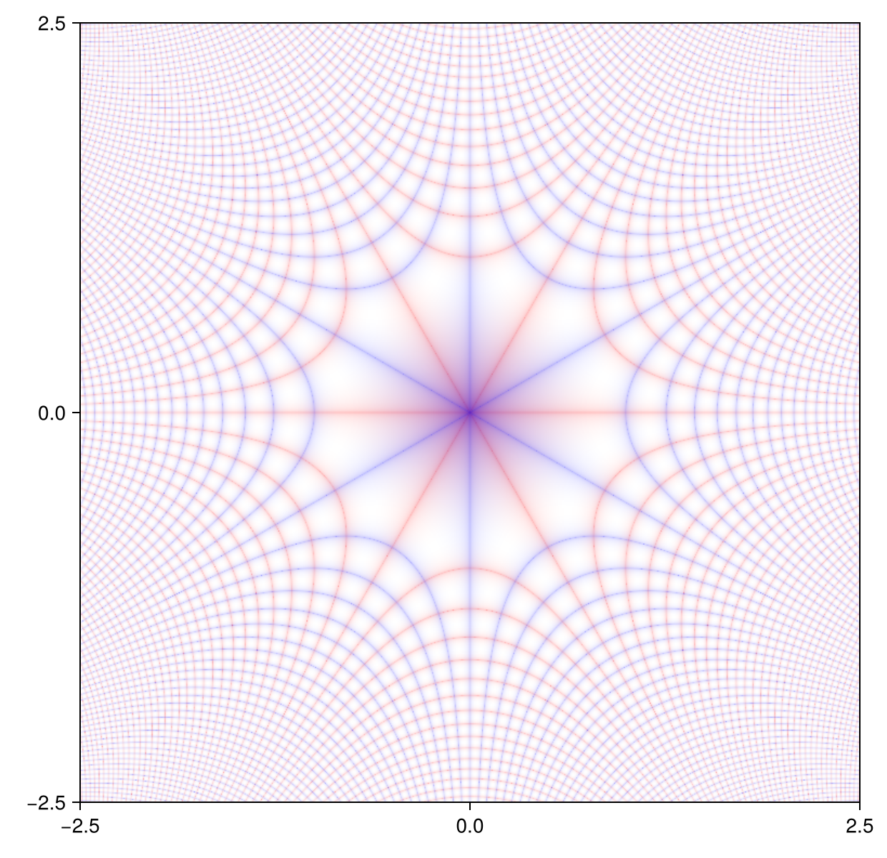

Creating Custom Plots
The underlying architecture of DomainColoring is fairly straightforward. A shader function (a map from complex numbers to colors) is applied to the input function f applied to some grid.
The specification of this grid, the pixels option, the axis limiting and the interface with Makie are identical throughout DomainColoring and stem from the internal macro @shadedplot.
An example makes this clear. Let's say we want a plot where integer grid lines of the real part and the imaginary part in different colors. A shader implementing this could be:
using DomainColoring, Colors
function shader(w, realcol, imagcol)
r, i = reim(w)
c = weighted_color_mean(abs(sinpi(r))^.06, colorant"white", realcol)
weighted_color_mean(abs(sinpi(i))^.06, c, imagcol)
endTurning this into a plotting function is then as simple as:
import DomainColoring: @shadedplot
@shadedplot(cgridplot,
(realcol = colorant"red", imagcol = colorant"blue"),
w -> shader(w, realcol, imagcol))This produces functions cgridplot and cgridplot!. Which give plots like:
using CairoMakie
cgridplot(z -> im*z^3-1, 2.5)